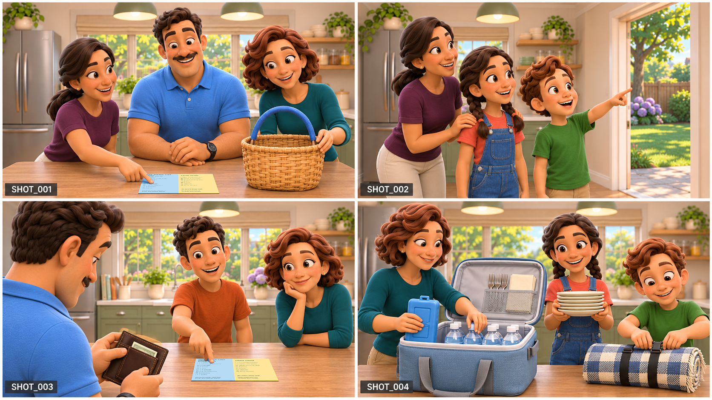
001: One card, two colors · 002: A picnic close to home · 003: A real limit · 004: What we already own
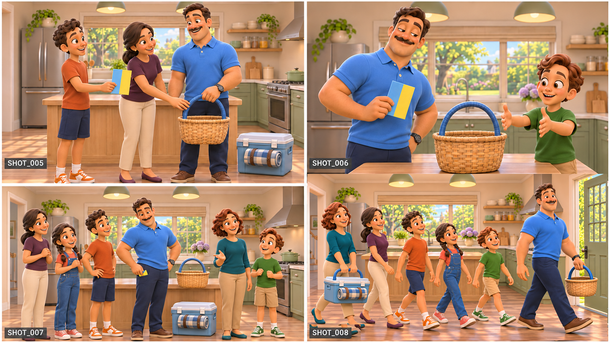
005: The size champion · 006: The basket has an opinion · 007: Everyone has a job · 008: Out together
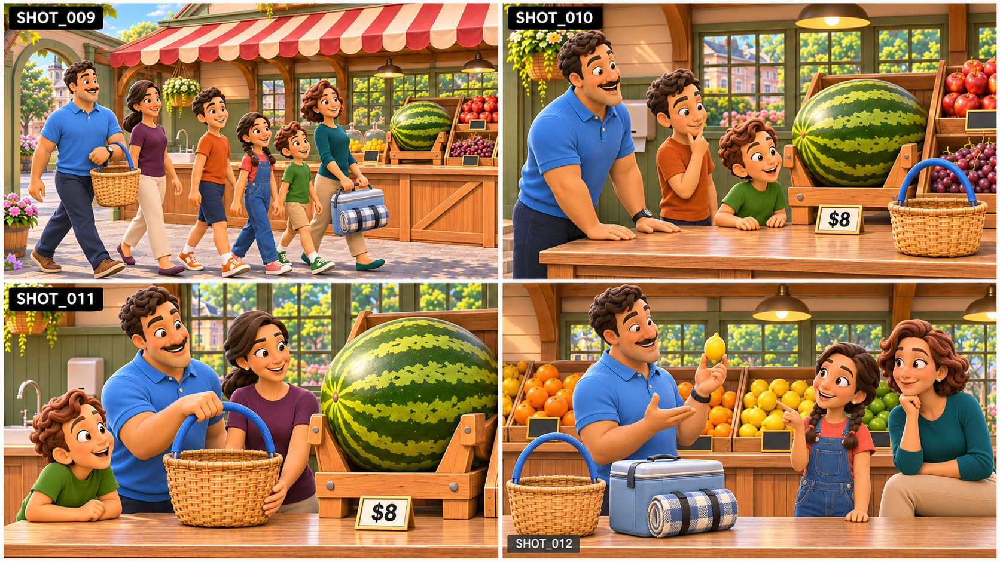
009: The fruit shop · 010: A champion in a cradle · 011: No room at the rim · 012: The little yellow orange
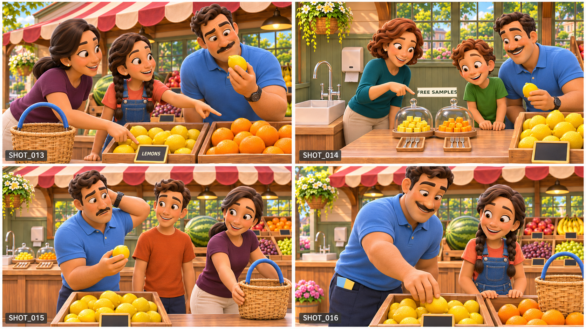
013: More than one clue · 014: An invitation to compare · 015: A little hesitation · 016: Putting a guess down
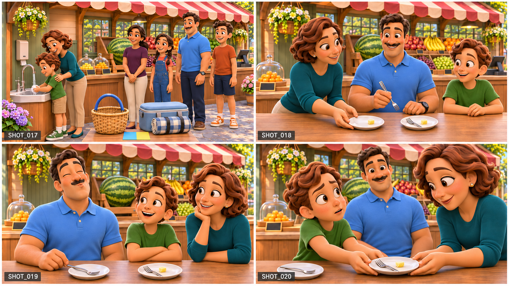
017: A proper washing pause · 018: Two separate sample plates · 019: The sour surprise · 020: Is sour the same as bad?
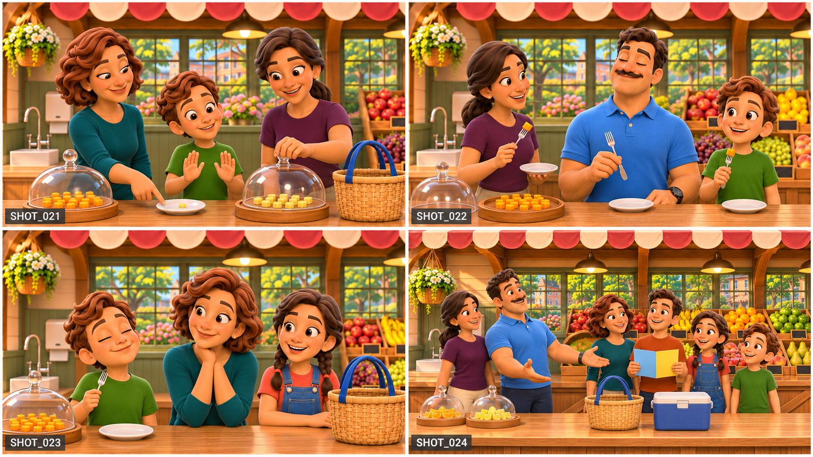
021: A reassuring difference · 022: An orange on its own terms · 023: A choice without a dare · 024: The expert changes the rule
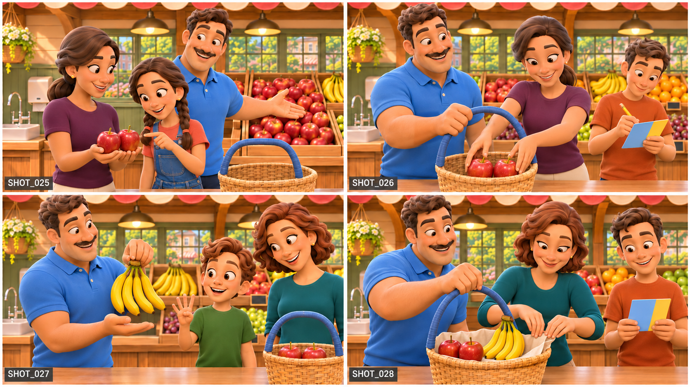
025: An apple is not a trophy · 026: Two apples, two dollars · 027: A bunch is one purchase · 028: No banana passengers
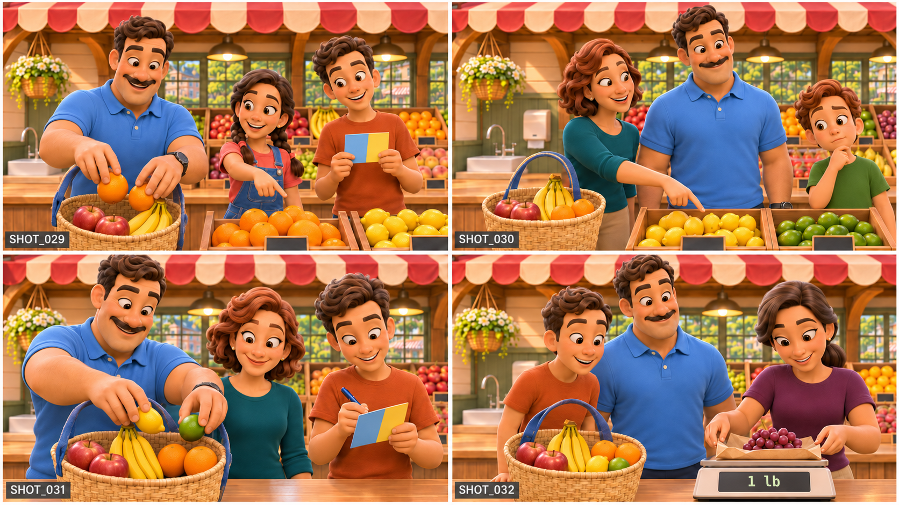
029: Oranges with their own name · 030: A reason for a lemon · 031: Two different citrus fruits · 032: A pound is a weight
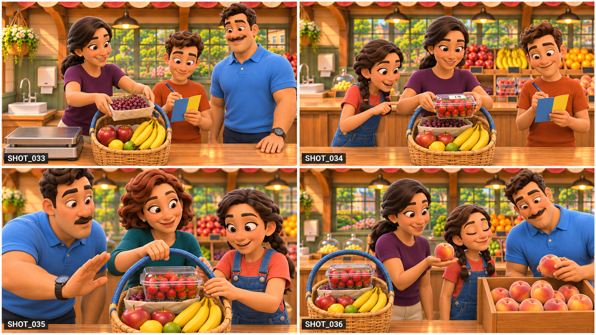
033: Weight, then price · 034: Strawberries under a lid · 035: A safe place for soft fruit · 036: Ready today
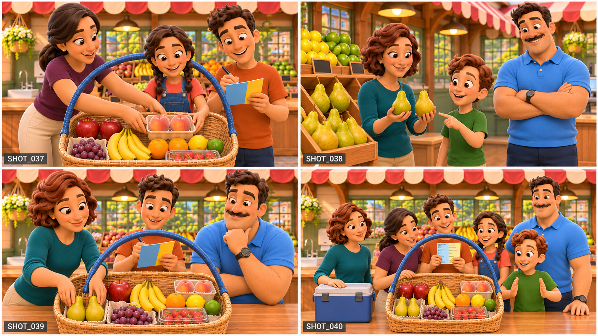
037: Peaches need protection · 038: The pear comparison · 039: The last fruit line · 040: Enough is a useful amount
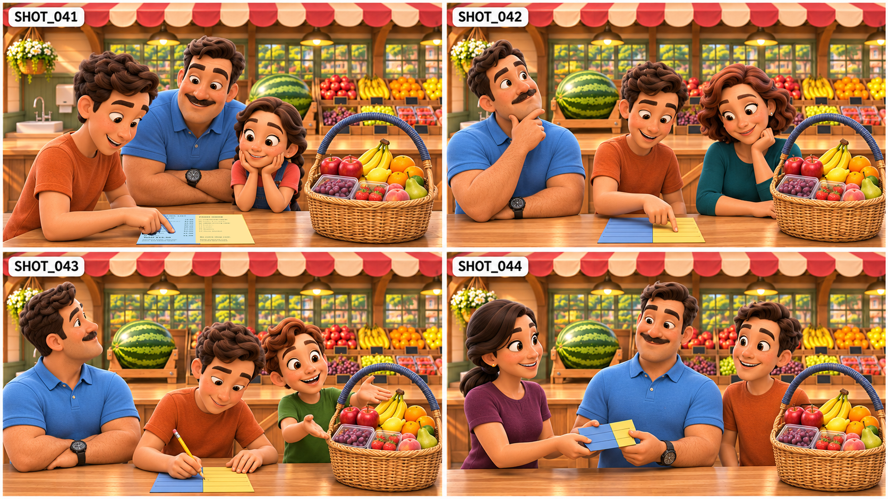
041: Reading the total · 042: A little breathing room · 043: The champion asks too much · 044: Leaving it for another picnic
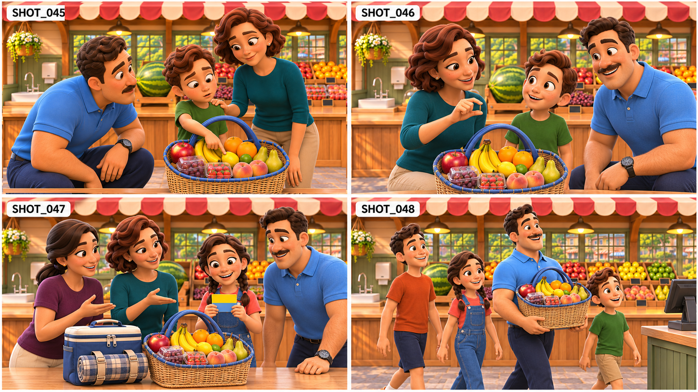
045: One remaining worry · 046: A small job for a strong flavor · 047: Sharing the important jobs · 048: A plan worth carrying
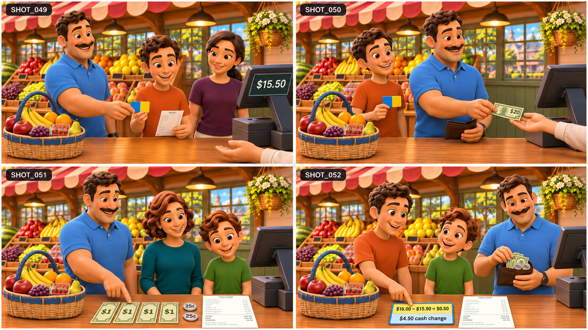
049: The real checkout · 050: One twenty-dollar bill · 051: Four dollars and two quarters · 052: Two different remainders
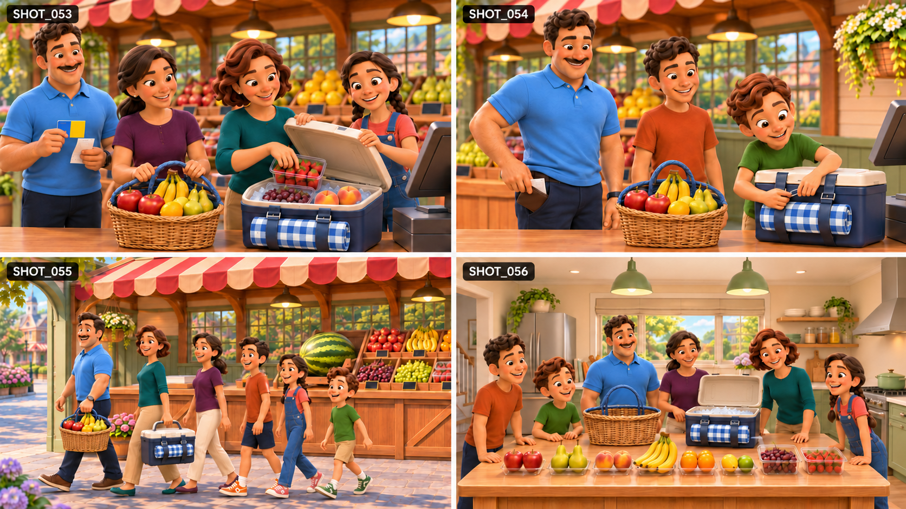
053: Gentle seats for the journey · 054: Everything accounted for · 055: A smaller victory · 056: Home, with the right fruit
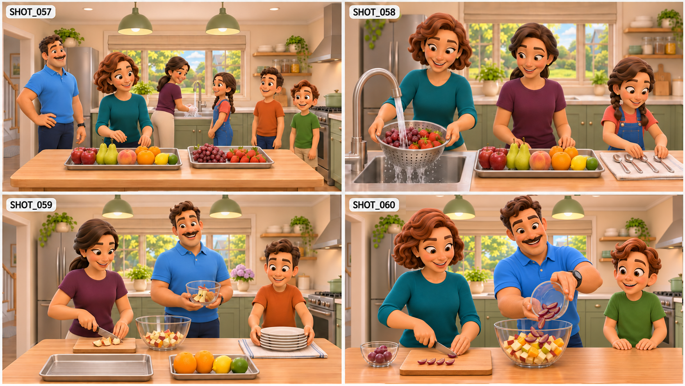
057: Clean hands again · 058: Rinse before preparing · 059: Adults take the cutting jobs · 060: Grapes take the long cut
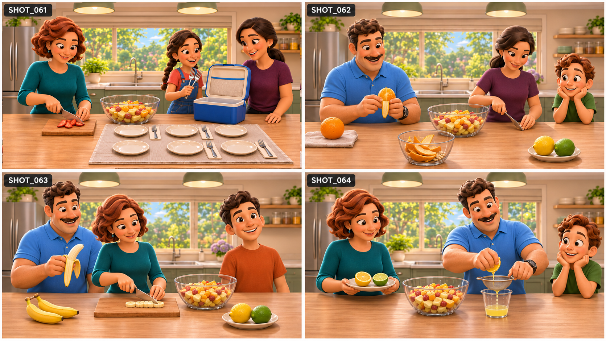
061: Strawberries join the colors · 062: Two oranges, no surprises · 063: The bunch becomes four · 064: Half of each

065: Saving the other halves · 066: A small amount, a shared bowl · 067: Cool until lunch · 068: Only a few steps away
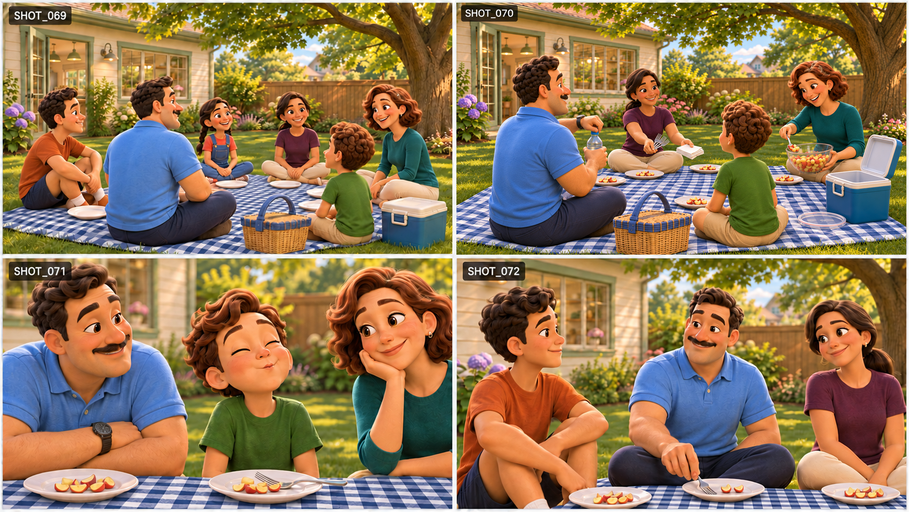
069: Six places in the shade · 070: The bowl finally opens · 071: Max makes his own choice · 072: What Dad wanted
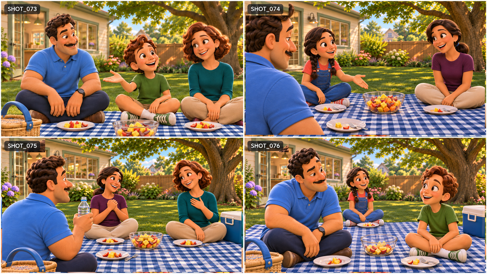
073: Already special · 074: A better kind of champion · 075: Both mothers, one good plan · 076: The face stays unfolded

077: A card worth keeping · 078: Tomorrow can wait · 079: Keeping what we made · 080: Enough for a happy ending